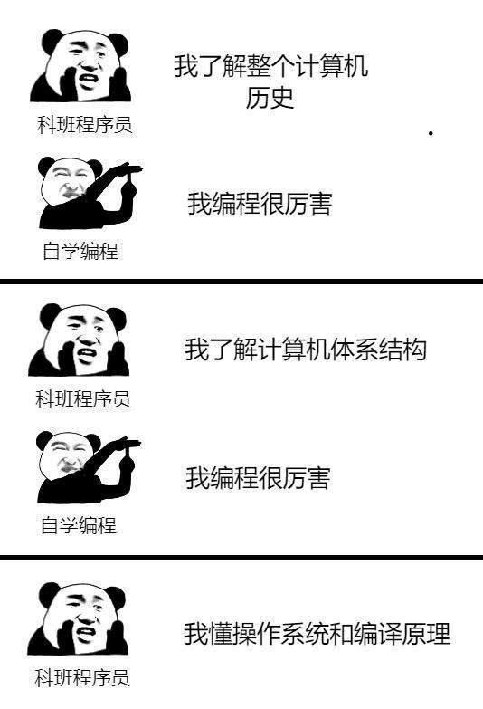
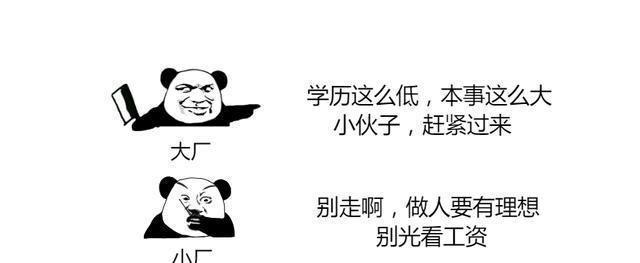
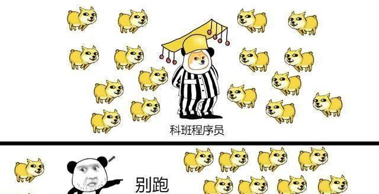
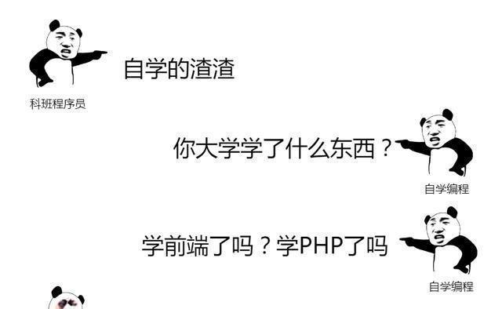

自学编程的程序员，似乎都处于轻视链的底端，而计算机专业的毕业生，似乎自然存在着一种自卑感。自学编程和科班程序员的差距，到底有多大？这也是行将“入坑”的编程喜好者，最关怀的一个问题。
学问体系的差异
科班出身的程序员，相关于自学编程者，具备愈加完善的学问体系，在实践工作中，能更快的构成完好的任职，从而更深化地处理问题。

由于大学期间，曾经系统的学习了计算机学问，因而科班程序员的学问体系愈加完好，学起东西的速度也更快。
自学成才者，可能由于触及到本人未知的根底概念，而不得不先补根底，再学习。
那么，谁的代码写的更好呢？还真不一定！
就业的区别
关于 BAT 大厂而言，僧多粥少，为了降低用人风险，他们更倾向于招聘科班选手。
关于初创公司而言，我没有时间等你从一个理论型选手，生长为实战型选手，我更喜欢具有短平快的技术。
索性，没有公司会仅仅看学历一个标签，代码 or 成果，这两个标签页非常重要。开源项目的掌管或参与，漂亮而充实的 GitHub 页面、优秀的 Top Coder，也会是很亮眼的标签。

具有资源的不同
科班程序员就像是宠物饲养员，被狗狗熏着熏着，本人也会把本人想象成狗了。
自学成才的，自家里只养了条狗，需求更努力的与大咖们交流思想，才干把本人想象成狗。

市场的需求量大增，编程入门门槛的降低，让无数自学编程的喜好者，涌入了这一行业，殊不知，若不时辰坚持学习心态，锐意进取，那么就会如马云那句名言：
反之，关于科班程序员而言，就算是再牛，人之为学，不日进则日退，不过几年，也会泯然众人矣。
话说回来，到底科班程序员，和自学成才的人，有什么区别呢？一张图能够表达的明明白白。
